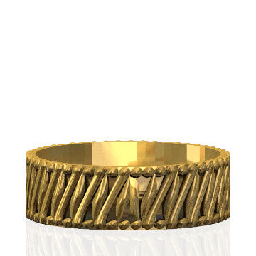

Description
Inspired by the traditional Indonesian motif Buketan, which is surrounded by rectangular parang, the flower is adorned with isen sawut and isen cecek. The formula to draw this intricate flower utilizes parametric equations, as stated by the Hungarian mathematics professor, Janos Karsai. Employing Karsai's developed formula enables the creation of any number (n) of petals, each with varying degrees of sharpness, all derived from a single, versatile equation.
Math Concept
The formula for drawing a parametric flower using a polar equation can be described as follows:
\( r = A |sin(2n \theta)|^b - 0.25 A|sin(rn \theta)|^b + C \)
where n = number of petal
A = length of petal
b = control of petal waviness, 0.1 < b < 1
C = radius of flower inner circle
How to Draw
Exhibit
Presenting the Parang Ring by The Geometry of Batik Team. With the mathematical model in hand, creating a 3D model becomes a straightforward process. The resulting 3D model serves as the foundation for crafting this necklace using the lost wax casting method in our exhibit